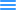

<main class="main-map">

  <nav class="navbar-map-view" >
    <!--<div class="shape-wrapper">-->
      <!--<div class="shape-wrapper__Shape"></div>-->

    <!--</div>-->

    <!--<div class="shape-wrapper__Shape"  tabindex="-1" (blur)="_toggleMenu($event)" (click)="_toggleMenu($event, 'devices')">-->
      <!--<div [ngClass]="{clickNavBarButton:  loadedFeature === 'devices'}" class="shape-wrapper__Shape"></div>-->
        <!--<app-blue-popup *ngIf="loadedFeature === 'devices'" ></app-blue-popup>-->
      <!--&lt;!&ndash;<app-no-found-blue-popup></app-no-found-blue-popup>&ndash;&gt;-->
    <!--</div>-->
    <!--<div class="shape-wrapper__Shape"  tabindex="-1" (blur)="_toggleMenu($event)" (click)="_toggleMenu($event, 'areas')">-->
      <!--<div [ngClass]="{clickNavBarButton:  loadedFeature === 'areas'}" class="shape-wrapper__Shape" ></div>-->
          <!--<app-turquoise-popup *ngIf="loadedFeature === 'areas'" ></app-turquoise-popup>-->
          <!--&lt;!&ndash;<app-no-found-turquoise-popup></app-no-found-turquoise-popup>&ndash;&gt;-->
    <!--</div>-->
    <!--<div class="shape-wrapper__Shape"  tabindex="-1" (blur)="_toggleMenu($event)" (click)="_toggleMenu($event, 'places')">-->
      <!--<div [ngClass]="{clickNavBarButton:  loadedFeature === 'places'}" class="shape-wrapper__Shape" > </div>-->
      <!--<app-purple-popup *ngIf="loadedFeature === 'places'" ></app-purple-popup>-->
      <!--&lt;!&ndash;<app-no-found-purple-popup></app-no-found-purple-popup>&ndash;&gt;-->
    <!--</div>    -->
    <div class="shape-wrapper" *ngFor="let button of buttons" tabindex="-1" (blur)="_toggleMenu($event)" (click)="_toggleMenu($event, button.type)">
      <div class="shape-wrapper__Shape" [ngClass]="{clickNavBarButton:  loadedFeature === button.type}"></div>
    </div>
    <app-popup *ngIf="popupOpen === true"></app-popup>

  </nav>

  <app-aside-popup *ngIf="loadedFeature === 'aside'" ></app-aside-popup>


  <div class="right-button" tabindex="-1" (blur)="_toggleMenu($event)" (click)="_toggleMenu($event, 'aside')">
    <div class="right-button__pink-circule"></div>
    
  </div>

  <div class="left-bottom-button">
    
  </div>


  <div class="container-bottom-right">
    <div class="ruler-btn"></div>
    <div class="joystick-btn">
      
      <div class="joystick-btn__minus"></div>
      
      
    </div>
    <div class="bottom-right-btn">
      <div class="bottom-right-btn__metter">500m</div>
      <div class="bottom-right-btn__line"><div class="divider1" ></div> <div class="divider2" style="bottom: 22px;left:-3px;"></div> </div>
      <div class="bottom-right-btn__X-9033429-Y-8033290">X-9033429 Y-8033290</div>
    </div>
  </div>
</main>
